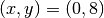
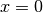
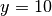

Uno de los grandes logros de la física moderna en sus comienzos fue la realización de Galileo de que el movimiento de un cuerpo en dos o tres dimensiones, puede entenderse como la composición de movimientos diferentes, uno por cada eje de coordenadas. En otras palabras, se considera que el cuerpo ejecuta un movimiento en el eje x y otro aparte en el y, y que el movimiento total es la suma vectorial de estos dos.
En esta sección vamos a extraer una enorme ventaja de este hecho para escribir de forma muy sencilla las ecuaciones de movimiento de un objeto. Para ello vamos a usar la librería Numpy, como se describe a continuación.
Numpy es una librería especializada en la creación y manipulación de arreglos de varias dimensiones. Los arreglos se crean a partir de una lista de la siguiente forma:
In [158]: li1 = [1, 2]
In [159]: import numpy as np
In [160]: a1 = np.array(li1)
Estos arreglos se prefieren a las listas para representar cantidades vectoriales, debido a que cumplen con las siguientes propiedades:
Al multiplicar un número por un arreglo, se multiplican todos sus elementos
In [161]: a1 * 3
Out[161]: array([3, 6])
In [162]: 5 * a1
Out[162]: array([ 5, 10])
Para las listas en cambio, esta operación hace que se repitan sus elementos, como ustedes recordarán:
In [163]: li1 * 3
Out[163]: [1, 2, 1, 2, 1, 2]
Al sumar dos arreglos, se suman uno a uno sus elementos
In [164]: a2 = np.array([3, -2])
In [165]: a1 + a2
Out[165]: array([4, 0])
In [166]: a2 - a1
Out[166]: array([ 2, -4])
En cambio, para las listas el signo + las concatena, mientas que el - arroja un error:
In [167]: li2 = [3, -2]
In [168]: li1 + li2
Out[168]: [1, 2, 3, -2]
In [169]: li2 - li1
---------------------------------------------------------------------------
TypeError Traceback (most recent call last)
<ipython-input-169-595c35523f88> in <module>()
----> 1 li2 - li1
TypeError: unsupported operand type(s) for -: 'list' and 'list'
Además de esto, Numpy tiene varias funciones adicionales para operar sobre vectores, como las siguientes:
np.dot, para calcular el producto punto (o escalar) de dos vectores.
In [170]: np.dot(a1, a2)
Out[170]: -1
np.cross, para calcular el producto cruz (o vectorial) de dos vectores.
In [171]: np.cross([1, 2, 3], [4, 5, 6])
Out[171]: array([-3, 6, -3])
np.norm, para calcular la norma de un vector.
In [172]: from numpy import linalg
In [173]: linalg.norm(a1)
Out[173]: 2.2360679774997898
Lo realmente interesante de usar arreglos de Numpy viene al momento de simular el movimiento de un objeto en dos o tres dimensiones, pues lo único que debe cambiarse en los programas anteriores (que estaban hechos para una dimensión) son los valores de las condiciones iniciales. El algoritmo de Verlet, con el que calculamos cómo se mueve el objeto a partir de estas condiciones, va a quedar exactamente como antes!
Mirémoslo por medio de un ejemplo. Para simular el movimiento de una partícula en dos dimensiones, empezamos por definir su posición inicial como:
p0 = np.array([0, 8])
Esto quiere decir que va a arrancar del punto con coordenadas . Posteriormente definimos su velocidad inicial como:
v0 = np.array([5, -3])
lo que implica que hacemos que se mueva en la dirección positiva del eje x con velocidad de 5 m/s, y en la dirección negativa del eje y con una velocidad de 3 m/s.
Finalmente definimos su aceleración inicial como:
a0 = np.array([0, g])
para especificar que la partícula sólo siente una fuerza en el eje y, debida a la gravedad.
Por su parte, vamos a seguir guardando el conjunto de posiciones, velocidades y aceleraciones en una lista, y no un arreglo, ya que no necesitamos que sean cantidades vectoriales:
posiciones = [p0]
velocidades = [v0]
aceleraciones = [a0]
Esto es todo lo que se necesita cambiar para pasar de simular el movimiento en una dimensión al de dos. Como mencioné arriba, el algoritmo de Verlet queda exactamente como estaba antes, lo cual es posible debido a las propiedades de los arreglos de Numpy descritas en la sección anterior. Por ejemplo, para calcular la nueva posición de la partícula, escribimos la siguiente línea de código:
nueva_posicion = posiciones[-1] + velocidades[-1]*dt + aceleraciones[-1]*(dt**2)/2
Dado que los elementos de posiciones, velocidades y aceleraciones son arreglos, lo que hace esta línea es multiplicar cada arreglo por el número que lo acompaña (por ejemplo, a velocidades[-1] lo multiplica por dt), y después suma los resultados componente a componente, es decir, suma el primer elemento de posiciones con los primeros de velocidades y de aceleraciones.
En otras palabras, lo que calcula esta línea para determinar la coordenada x de la nueva posición de la partícula es lo siguiente (asumiendo que dt vale 0.01):
0 + 5*(0.01) + 0*(0.01**2)/2
que corresponde al valor de nueva_posicion[0]. Por su parte, el valor nueva_posicion[1] es:
8 + (-3)*(0.01) + (-9.8)*(0.01**2)/2
De la misma forma se calculan los valores de nueva_velocidad y nueva_aceleracion.
Ejercicios
Crear un nuevo archivo y modificar el código para simular el movimiento en una dimensión, con las instrucciones anteriores.
Definir una función llamada colision_muros que determine si una partícula se ha chocado contra un muro ubicado en  o .
Sugerencias:
Generar una animación con VPython del fenómeno. Para ello vamos a definir la partícula como:
particula = vis.cylinder(pos=p0, radius=1, axis=(0, 0, 0.2), color=(0, 0.5, 0.9))
Es decir que corresponde a un cilindro de radio 1, que tiene una altura muy muy pequeña, que es el 0.2 al final de axis. En otras palabras, es como si fuera una moneda!
Por su parte, los muros los definimos como:
muros = vis.curve(pos=[(0,0),(10,0),(10,10)], color=vis.color.orange, radius=0.2)
Esto corresponde a una curva de radio muy pequeño, que va desde (0, 0), hasta (10,0) y después hasta (10,10). En pantalla observaremos una figura de color naranja, en forma de L invertida.
Finalmente, actualizaremos las posiciones de particula usando la lista de posiciones calculada con el algoritmo de Verlet en el Ejercicio 2.